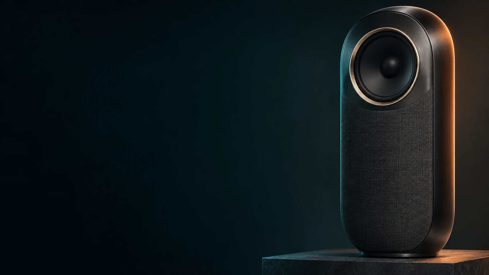
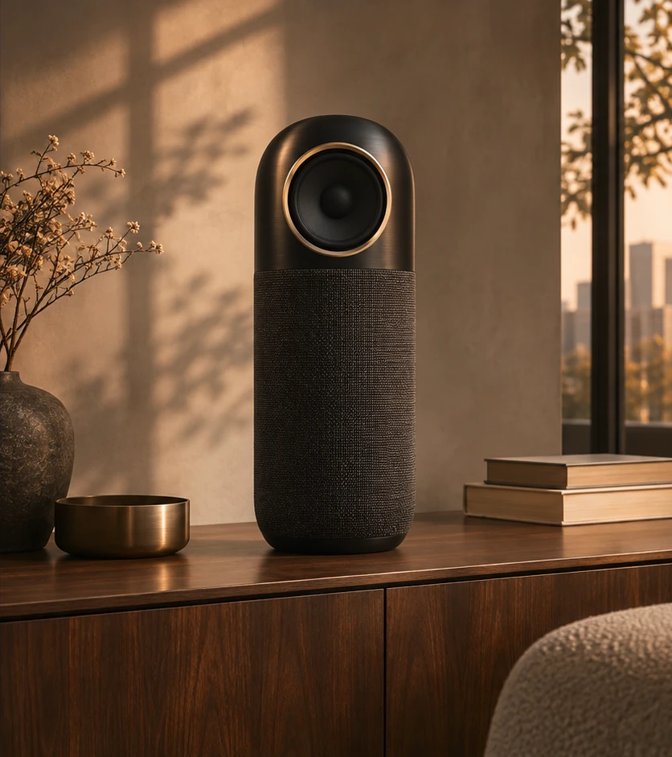

SOUND / REDESIGNED
Sound, shaped
around you.
The shape of sound, made visible. An imagined home audio experience where design and atmosphere meet.
Explore listening modesWireless audio concept
01 / THE ORIGIN
Every note
starts with
a pulse.
Follow a single point of energy as it travels through an imagined acoustic space.
SCROLL TO FOLLOW THE SIGNAL ↓02 / THE MOVEMENT
From pulse
to resonance.
As you move, the signal develops into layers. A visual metaphor for the depth and texture of listening.
WAVE LAYERS / IN MOTION03 / THE SPACE
Sound becomes
space.
The field opens around you, turning one movement into an environment. The illustration responds continuously to your scroll.
NEXT / PRODUCT DESIGN ↓01 / FORM
Designed to
disappear.
Not another object competing for your attention. A considered silhouette, soft curves and honest material details. A speaker envisioned as part of the room, not an interruption to it.
02 / INTERACTION
Feel the
difference.
Explore three visual interpretations of how a room can sound. Choose a listening mood and see the surrounding sound field shift in real time.
01 / CLARITY
A moment of focus.
A narrow, balanced visual field inspired by the detail of a single instrument in a quiet room.
Illustrative visualization only. No audio is played and no performance specifications are claimed.

03 / SPACE
Between silence
and sound.
Morning light. A familiar record. The quiet between tracks. We designed a visual identity that belongs to those moments, drawing from warm architectural spaces and understated technology.
THE SHAPE OF SOUND / SONVIA
Less noise.
More feeling.
SONVIA is a fictional brand, designed by SHFN to explore digital storytelling and meaningful interactive product experiences.
Return to portfolio